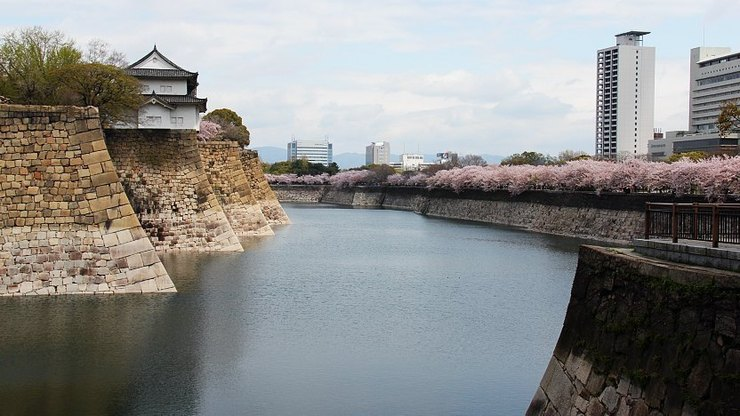
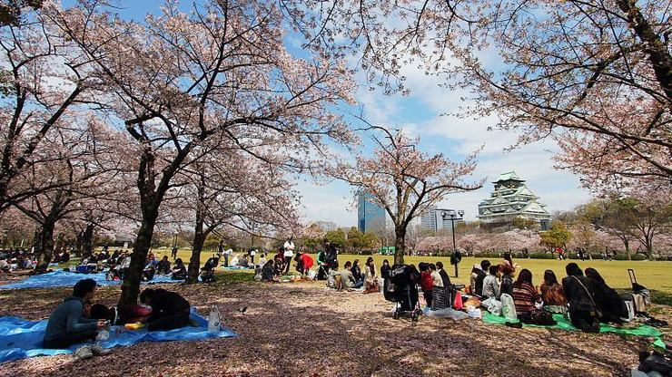

Osaka Castle(Osakajo)
大阪城

The construction of Osaka Castle (大阪城, Ōsakajō) started in 1583 on the former site of the Ishiyama Honganji Temple, which had been destroyed by Oda Nobunaga thirteen years earlier. Toyotomi Hideyoshi intended the castle to become the center of a new, unified Japan under Toyotomi rule. It was the largest castle at the time.
However, a few years after Hideyoshi's death, Tokugawa troops attacked and destroyed the castle and terminated the Toyotomi lineage in 1615. Osaka Castle was rebuilt by Tokugawa Hidetada in the 1620s, but its main castle tower was struck by lightening in 1665 and burnt down.
It was not until 1931 that the present ferro-concrete reconstruction of the castle tower was built. During the war it miraculously survived the city-wide air raids. Major repair works gave the castle new glamor in 1997. The castle tower is now entirely modern on the inside and even features an elevator for easier accessibility. It houses an informative museum about the castle's history and Toyotomi Hideyoshi.
The castle tower is surrounded by secondary citadels, gates, turrets, impressive stone walls and moats. The Nishinomaru Garden, encompassing the former "western citadel", is a lawn garden with 600 cherry trees, a tea house, the former Osaka Guest House and nice views of the castle tower from below. Unlike most of the rest of the castle grounds, the garden requires an admission fee.
The entire Osaka Castle Park covers about two square kilometers with lots of green space, sport facilities, a multi-purpose arena (Osakajo Hall) and a shrine dedicated to Toyotomi Hideyoshi. The park is one of Osaka's most popular hanami spots during the cherry blossom season, which usually takes place in early April.
